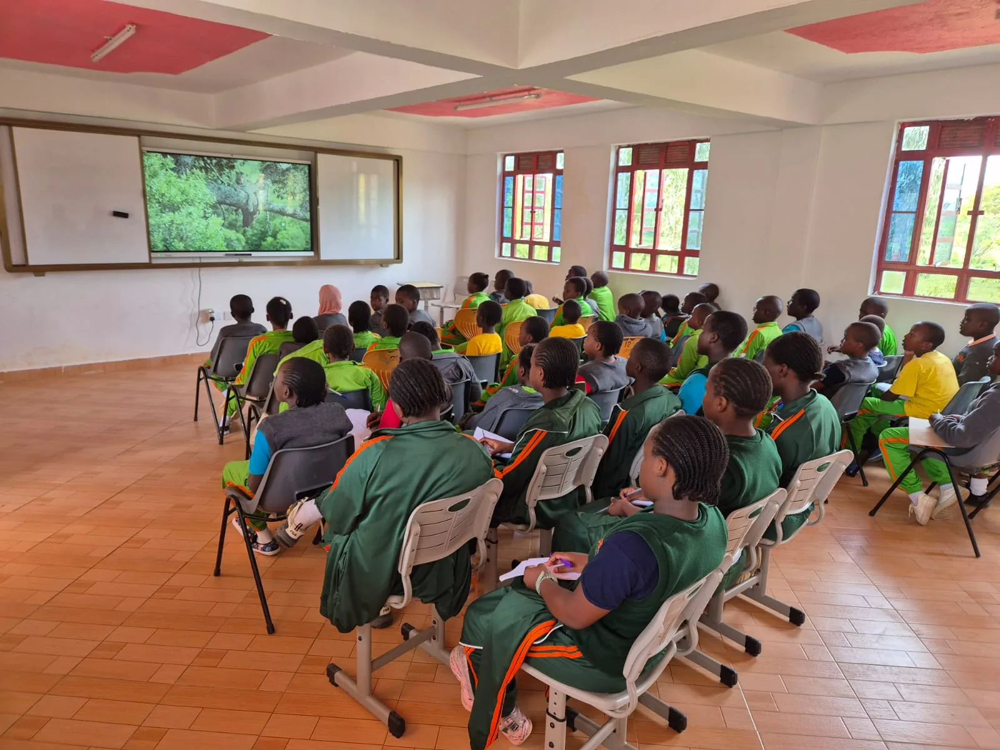

Pre-primary
Early learning experiences that support language, play, social growth and readiness for primary school.

Academics
A CBC-aligned journey that develops strong foundations, practical competencies and the confidence to keep learning.
Our approach
NewDawn’s academic programme follows Kenya’s national Competency Based Curriculum and is supported by enrichment experiences beyond the core timetable.
English is the language of instruction. Across each pathway, learners encounter age-appropriate opportunities to communicate, create, collaborate and apply what they learn.
Three pathways
Families should contact the school directly to confirm current class availability and admissions requirements.
Early learning experiences that support language, play, social growth and readiness for primary school.
CBC learning supported by reading culture, language activities, music and opportunities to communicate with confidence.
Digitally enabled classrooms with smart boards, supporting learners as they deepen competencies and independence.

Junior School
Junior School began in 2025. Its classrooms are fully digitised and equipped with smart boards, helping teachers bring visual, interactive resources into everyday learning.
Technology is presented as a learning tool—not a substitute for the relationships, guidance and active participation that make education meaningful.
Enquire about Junior School ↗Enrichment
Verified programmes in the 2026 school profile broaden the learner experience.
Drums, guitar, violins, violas, cello and digital keyboard.
Weekly storybook sessions that encourage reading beyond the classroom.
French language classes for learners in Grades 4–6.
Spelling bees and debates that support language and public speaking.
Programme overview
| Pathway | Levels | Verified highlights |
|---|---|---|
| Pre-primary | Playgroup, PP1, PP2 | Dedicated Early Childhood Development spaces |
| Primary | Grades 1–6 | CBC, reading, music, French for Grades 4–6, debates and spelling bees |
| Junior School | Contact school for current classes | Smart-board-equipped digital classrooms |